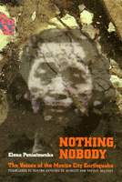

This powerful account chronicles the human drama of the devastating earthquake that rocked Mexico City
This powerful account chronicles the human drama of the devastating earthquake that rocked Mexico City


 This powerful account chronicles the human drama of the devastating earthquake that rocked Mexico City
This powerful account chronicles the human drama of the devastating earthquake that rocked Mexico City

|  |
Nothing, NobodyThe Voices of the Mexico City EarthquakeElena Poniatowska, translated by Aurora Camacho de Schmidt, foreword by Arthur Schmidtpaper EAN: 978-1-56639-345-4 (ISBN: 1-56639-345-0) |
September 19, 1985: A powerful earthquake hits Mexico City in the early morning hours. As the city collapses, the government fails to respond. Long a voice of social conscience, prominent Mexican journalist Elena Poniatowska chronicles the disintegration of the city's physical and social structure, the widespread grassroots organizing against government corruption and incompetence, and the reliency of the human spirit. As a transformative moment in the life of mexican society, the earthquake is as much a component of the country's current crisis as the 1982 debt crisis, the problematic economic of the last ten years, and the recent elections.
In masterfully weaving together a multiplicity of voices, Poniatowska has reasserted the inherent value and latent power of people working together. Punctuated by Poniatowska's own experiences and observations, these post disaster testimonies speak of the disruption of families and neighborhoods, of the destruction of homes and hospitals, of mutilation and death—the collective loss of a city. Drawing the reader dramatically into the scene of national horror through dozens of personal stories, Poniatowska demonstrates the importance of courage and self-reliance in redeeming life from chaos.
Excerpt available at www.temple.edu/tempress
Read a review on H-Net, March 1996.
Introduction to the Series, Voices of Latin American Life – Arthur Schmidt
Foreword: The Shaking of a Nation – Aurora Camacho de Schmidt and Arthur Schmidt
Nothing, Nobody: The Voices of the Mexico City Earthquake
Glossary
Index
 | Elena Poniatowska, a prominent and prolific Mexican journalist and novelist, has written twenty-five books. Several have been translated into English, including Massacre in Mexico about the 1968 student/worker uprising in Mexico City, and the forthcoming Tin�sima, which centers upon the life of Tina Modotti. |
 | Aurora Camacho de Schmidt is Assistant Professor in the Department of Modern Languages and Literatures at Swarthmore College. She has worked as a writer and as the National Representative for the Mexico-U.S. Border Program of the American Friends Service Committee. |
 | Arthur Schmidt is Associate Professor of History and former Director of the Latin American Studies Center at Temple University. He is the author of The Social and Economic Effect of the Railroad in Puebla and Veracruz, Mexico, 1867-1911. |
General Interest
Latin American/Caribbean Studies
Voices of Latin American Life, edited by Arthur Schmidt.
Voices of Latin American Life, edited by Arthur Schmidt, aims to bring the texture and humanity of Latin American experiences to English-language readers through translations of works that impart direct voices. Through testimonial literature, interviews, and essays, the series will present important Latin American views from the famous and the anonymous that reflect the immense challenges of fundamental issues and of daily life in the late twentieth and early twenty-first centuries.
© 2015 Temple University. All Rights Reserved. This page: http://www.temple.edu/tempress/titles/1205_reg.html.